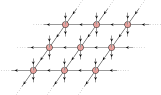
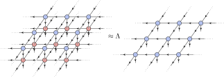

The 3D classical Ising model
In this example, we will showcase how one can use PEPSKit to study 3D classical statistical mechanics models. In particular, we will consider a specific case of the 3D classical Ising model, but the same techniques can be applied to other 3D classical models as well.
As compared to simulations of 2D partition functions, the workflow presented in this example is a bit more experimental and less 'black-box'. Therefore, it also serves as a demonstration of some of the more internal functionality of PEPSKit, and how one can adapt it to less 'standard' kinds of problems.
Let us consider the partition function of the classical Ising model,
\[\mathcal{Z}(\beta) = \sum_{\{s\}} \exp(-\beta H(s)) \text{ with } H(s) = -J \sum_{\langle i, j \rangle} s_i s_j .\]
where the classical spins $s_i \in \{+1, -1\}$ are located on the vertices $i$ of a 3D cubic lattice. The partition function of this model can be represented as a 3D tensor network with a rank-6 tensor at each vertex of the lattice. Such a network can be contracted by finding the fixed point of the corresponding transfer operator, in exactly the same spirit as the boundary MPS methods demonstrated in another example.
Let's start by making the example deterministic and importing the required packages:
using Random
using LinearAlgebra
using PEPSKit, TensorKit
using KrylovKit, OptimKit, Zygote
Random.seed!(81812781144);Defining the partition function
Just as in the 2D case, the first step is to define the partition function as a tensor network. The procedure is exactly the same as before, the only difference being that now every spin participates in interactions associated to six links adjacent to that site. This means that the partition function can be written as an infinite 3D network with a single constituent rank-6 PEPSKit.PEPOTensor O located at each site of the cubic lattice. To verify our example we will check the magnetization and energy, so we also define the corresponding rank-6 tensors M and E while we're at it.
function three_dimensional_classical_ising(; beta, J = 1.0)
K = beta * J
# Boltzmann weights
t = ComplexF64[exp(K) exp(-K); exp(-K) exp(K)]
r = eigen(t)
q = r.vectors * sqrt(LinearAlgebra.Diagonal(r.values)) * r.vectors
# local partition function tensor
O = zeros(2, 2, 2, 2, 2, 2)
O[1, 1, 1, 1, 1, 1] = 1
O[2, 2, 2, 2, 2, 2] = 1
@tensor o[-1 -2; -3 -4 -5 -6] :=
O[1 2; 3 4 5 6] * q[-1; 1] * q[-2; 2] * q[-3; 3] * q[-4; 4] * q[-5; 5] * q[-6; 6]
# magnetization tensor
M = copy(O)
M[2, 2, 2, 2, 2, 2] *= -1
@tensor m[-1 -2; -3 -4 -5 -6] :=
M[1 2; 3 4 5 6] * q[-1; 1] * q[-2; 2] * q[-3; 3] * q[-4; 4] * q[-5; 5] * q[-6; 6]
# bond interaction tensor and energy-per-site tensor
e = ComplexF64[-J J; J -J] .* q
@tensor e_x[-1 -2; -3 -4 -5 -6] :=
O[1 2; 3 4 5 6] * q[-1; 1] * q[-2; 2] * q[-3; 3] * e[-4; 4] * q[-5; 5] * q[-6; 6]
@tensor e_y[-1 -2; -3 -4 -5 -6] :=
O[1 2; 3 4 5 6] * q[-1; 1] * q[-2; 2] * e[-3; 3] * q[-4; 4] * q[-5; 5] * q[-6; 6]
@tensor e_z[-1 -2; -3 -4 -5 -6] :=
O[1 2; 3 4 5 6] * e[-1; 1] * q[-2; 2] * q[-3; 3] * q[-4; 4] * q[-5; 5] * q[-6; 6]
e = e_x + e_y + e_z
# fixed tensor map space for all three
TMS = ℂ^2 ⊗ (ℂ^2)' ← ℂ^2 ⊗ ℂ^2 ⊗ (ℂ^2)' ⊗ (ℂ^2)'
return TensorMap(o, TMS), TensorMap(m, TMS), TensorMap(e, TMS)
end;Let's initialize these tensors at inverse temperature $\beta=0.2391$, which corresponds to a slightly lower temperature than the critical value $\beta_c=0.2216544…$
beta = 0.2391
O, M, E = three_dimensional_classical_ising(; beta)
O isa PEPSKit.PEPOTensortrueContracting the partition function
To contract our infinite 3D partition function, we first reinterpret it as an infinite power of a slice-to-slice transfer operator $\mathbb{T}$, where $\mathbb{T}$ can be seen as an infinite 2D projected entangled-pair operator (PEPO) which consists of the rank-6 tensor O at each site of an infinite 2D square lattice,

To contract the original infinite network, all we need to do is to find the leading eigenvector of the PEPO $\mathbb{T}$, The fixed point of such a PEPO can be parametrized as a PEPS $\psi$, which should then satisfy the eigenvalue equation $\mathbb{T} |\psi\rangle = \Lambda |\psi\rangle$, or diagrammatically:

For a Hermitian transfer operator $\mathbb{T}$ we can characterize the fixed point PEPS $|\psi\rangle$ which satisfies the eigenvalue equation $\mathbb{T} |\psi\rangle = \Lambda |\psi\rangle$ corresponding to the largest magnitude eigenvalue $\Lambda$ as the solution of a variational problem
\[|\psi\rangle = \text{argmin}_{|\psi\rangle} \left ( \lim_{N \to ∞} - \frac{1}{N} \log \left( \frac{\langle \psi | \mathbb{T} | \psi \rangle}{\langle \psi | \psi \rangle} \right) \right ) ,\]
where $N$ is the diverging number of sites of the 2D transfer operator $\mathbb{T}$. The function minimized in this expression is exactly the free energy per site of the partition function. This means we can directly find the fixed-point PEPS by variationally minimizing the free energy.
Defining the cost function
Using PEPSKit.jl, this cost function and its gradient can be computed, after which we can use OptimKit.jl to actually optimize it. We can immediately recognize the denominator $\langle \psi | \psi \rangle$ as the familiar PEPS norm, where we can compute the norm per site as the network_value of the corresponding InfiniteSquareNetwork by contracting it with the CTMRG algorithm. Similarly, the numerator $\langle \psi | \mathbb{T} | \psi \rangle$ is nothing more than an InfiniteSquareNetwork consisting of three layers corresponding to the ket, transfer operator and bra objects. This object can also be constructed and contracted in a straightforward way, so we can again compute its network_value.
To define our cost function, we then need to construct the transfer operator as an InfinitePEPO, construct the two infinite 2D contractible networks for the numerator and denominator from the current PEPS and this transfer operator, and specify a contraction algorithm we can use to compute the values of these two networks. In addition, we'll specify the specific reverse rule algorithm that will be used to compute the gradient of this cost function.
boundary_alg = SimultaneousCTMRG(; maxiter = 150, tol = 1.0e-8, verbosity = 1)
rrule_alg = EigSolver(;
solver_alg = KrylovKit.Arnoldi(; maxiter = 30, tol = 1.0e-6, eager = true), iterscheme = :diffgauge
)
T = InfinitePEPO(O)
function pepo_costfun((peps, env_double_layer, env_triple_layer))
# use Zygote to compute the gradient automatically
E, gs = withgradient(peps) do ψ
# construct the PEPS norm network
n_double_layer = InfiniteSquareNetwork(ψ)
# contract this network
env_double_layer′, info = PEPSKit.hook_pullback(
leading_boundary,
env_double_layer,
n_double_layer,
boundary_alg;
alg_rrule = rrule_alg,
)
# construct the PEPS-PEPO-PEPS overlap network
n_triple_layer = InfiniteSquareNetwork(ψ, T)
# contract this network
env_triple_layer′, info = PEPSKit.hook_pullback(
leading_boundary,
env_triple_layer,
n_triple_layer,
boundary_alg;
alg_rrule = rrule_alg,
)
# update the environments for reuse
PEPSKit.ignore_derivatives() do
PEPSKit.update!(env_double_layer, env_double_layer′)
PEPSKit.update!(env_triple_layer, env_triple_layer′)
end
# compute the network values per site
λ3 = network_value(n_triple_layer, env_triple_layer)
λ2 = network_value(n_double_layer, env_double_layer)
# use this to compute the actual cost function
return -log(real(λ3 / λ2))
end
g = only(gs)
return E, g
end;There are a few things to note about this cost function definition. Since we will pass it to the OptimKit.optimize, we require it to return both our cost function and the corresponding gradient. To do this, we simply use the withgradient method from Zygote.jl to automatically compute the gradient of the cost function straight from the primal computation. Since our cost function involves contractions using leading_boundary, we also have to specify exactly how Zygote should handle the backpropagation of the gradient through this function. This can be done using the PEPSKit.hook_pullback function from PEPSKit.jl, which allows to hook into the pullback of a given function by specifying a specific algorithm for the pullback computation. Here, we opted to use an Arnoldi method to solve the linear problem defining the gradient of the network contraction at its fixed point. This is exactly the workflow that internally underlies PEPSKit.fixedpoint, and more info on particular gradient algorithms can be found in the corresponding docstrings.
Characterizing the optimization manifold
In order to make the best use of OptimKit.jl, we should specify some properties of the manifold on which we are optimizing. Looking at our cost function defined above, a point on our optimization manifold corresponds to a Tuple of three objects. The first is an InfinitePEPS encoding the fixed point we are actually optimizing, while the second and third are CTMRGEnv objects corresponding to the environments of the double and triple layer networks $\langle \psi | \psi \rangle$ and $\langle \psi | T | \psi \rangle$ respectively. While the environments are just there so we can reuse them between subsequent contractions and we don't need to think about them much, optimizing over the manifold of InfinitePEPS requires a bit more care.
In particular, we need to define two kinds of operations on this manifold: a retraction and a transport. The retraction, corresponding to the retract keyword argument of OptimKit.optimize, specifies how to move from a point on a manifold along a given descent direction to obtain a new manifold point. The transport, corresponding to the transport! keyword argument of OptimKit.optimize, specifies how to transport a descent direction at a given manifold point to a valid descent direction at a different manifold point according to the appropriate metric. For a more detailed explanation we refer to the OptimKit.jl README. In PEPSKit.jl, these two procedures are defined through the PEPSKit.peps_retract and PEPSKit.peps_transport! methods. While it is instructive to read the corresponding docstrings in order to understand what these actually do, here we can just blindly reuse them where the only difference is that we have to pass along an extra environment since our cost function requires two distinct contractions as opposed to the setting of Hamiltonian PEPS optimization which only requires a double-layer contraction.
function pepo_retract((peps, env_double_layer, env_triple_layer), η, α)
(peps´, env_double_layer´), ξ = PEPSKit.peps_retract((peps, env_double_layer), η, α)
env_triple_layer´ = deepcopy(env_triple_layer)
return (peps´, env_double_layer´, env_triple_layer´), ξ
end
function pepo_transport!(
ξ,
(peps, env_double_layer, env_triple_layer),
η,
α,
(peps´, env_double_layer´, env_triple_layer´),
)
return PEPSKit.peps_transport!(
ξ, (peps, env_double_layer), η, α, (peps´, env_double_layer´)
)
end;Finding the fixed point
All that is left then is to specify the virtual spaces of the PEPS and the two environments, initialize them in the appropriate way, choose an optimization algortithm and call the optimize function from OptimKit.jl to get our desired PEPS fixed point.
Vpeps = ℂ^2
Venv = ℂ^12
psi0 = initializePEPS(T, Vpeps)
env2_0 = CTMRGEnv(InfiniteSquareNetwork(psi0), Venv)
env3_0 = CTMRGEnv(InfiniteSquareNetwork(psi0, T), Venv)
optimizer_alg = LBFGS(32; maxiter = 100, gradtol = 1.0e-5, verbosity = 3)
(psi_final, env2_final, env3_final), f, = optimize(
pepo_costfun,
(psi0, env2_0, env3_0),
optimizer_alg;
inner = PEPSKit.real_inner,
retract = pepo_retract,
(transport!) = (pepo_transport!),
);[ Info: LBFGS: initializing with f = -5.540733951820e-01, ‖∇f‖ = 7.7844e-01
┌ Warning: CTMRG cancel 150: obj = +1.702942228759e+01 +1.443123137050e-07im err = 2.4386740933e-05 time = 1.04 sec
└ @ PEPSKit ~/repos/PEPSKit.jl/src/algorithms/ctmrg/ctmrg.jl:153
[ Info: LBFGS: iter 1, Δt 4.96 s: f = -7.770809303692e-01, ‖∇f‖ = 3.1305e-02, α = 7.10e+02, m = 0, nfg = 7
[ Info: LBFGS: iter 2, Δt 568.8 ms: f = -7.841115159615e-01, ‖∇f‖ = 2.0103e-02, α = 1.00e+00, m = 1, nfg = 1
[ Info: LBFGS: iter 3, Δt 175.6 ms: f = -7.927057334845e-01, ‖∇f‖ = 2.3327e-02, α = 1.00e+00, m = 2, nfg = 1
[ Info: LBFGS: iter 4, Δt 135.5 ms: f = -7.962897324757e-01, ‖∇f‖ = 2.2475e-02, α = 1.00e+00, m = 3, nfg = 1
[ Info: LBFGS: iter 5, Δt 131.8 ms: f = -7.996749023744e-01, ‖∇f‖ = 7.0288e-03, α = 1.00e+00, m = 4, nfg = 1
[ Info: LBFGS: iter 6, Δt 159.1 ms: f = -8.000821001207e-01, ‖∇f‖ = 1.2717e-03, α = 1.00e+00, m = 5, nfg = 1
[ Info: LBFGS: iter 7, Δt 196.0 ms: f = -8.001106031252e-01, ‖∇f‖ = 1.3384e-03, α = 1.00e+00, m = 6, nfg = 1
[ Info: LBFGS: iter 8, Δt 215.9 ms: f = -8.002622019964e-01, ‖∇f‖ = 2.4945e-03, α = 1.00e+00, m = 7, nfg = 1
[ Info: LBFGS: iter 9, Δt 243.9 ms: f = -8.004505054484e-01, ‖∇f‖ = 2.9259e-03, α = 1.00e+00, m = 8, nfg = 1
[ Info: LBFGS: iter 10, Δt 127.7 ms: f = -8.007649170868e-01, ‖∇f‖ = 1.7221e-03, α = 1.00e+00, m = 9, nfg = 1
[ Info: LBFGS: iter 11, Δt 136.6 ms: f = -8.008760488382e-01, ‖∇f‖ = 2.2475e-03, α = 1.00e+00, m = 10, nfg = 1
[ Info: LBFGS: iter 12, Δt 126.0 ms: f = -8.011008674672e-01, ‖∇f‖ = 1.5561e-03, α = 1.00e+00, m = 11, nfg = 1
[ Info: LBFGS: iter 13, Δt 161.5 ms: f = -8.013170488565e-01, ‖∇f‖ = 1.1561e-03, α = 1.00e+00, m = 12, nfg = 1
[ Info: LBFGS: iter 14, Δt 173.9 ms: f = -8.013730505450e-01, ‖∇f‖ = 7.1300e-04, α = 1.00e+00, m = 13, nfg = 1
[ Info: LBFGS: iter 15, Δt 169.2 ms: f = -8.013886152636e-01, ‖∇f‖ = 2.8462e-04, α = 1.00e+00, m = 14, nfg = 1
[ Info: LBFGS: iter 16, Δt 179.4 ms: f = -8.013946333330e-01, ‖∇f‖ = 2.7607e-04, α = 1.00e+00, m = 15, nfg = 1
[ Info: LBFGS: iter 17, Δt 356.0 ms: f = -8.014080615636e-01, ‖∇f‖ = 3.6096e-04, α = 1.00e+00, m = 16, nfg = 1
[ Info: LBFGS: iter 18, Δt 134.3 ms: f = -8.015095421688e-01, ‖∇f‖ = 1.9822e-03, α = 1.00e+00, m = 17, nfg = 1
[ Info: LBFGS: iter 19, Δt 145.7 ms: f = -8.015784052508e-01, ‖∇f‖ = 1.8040e-03, α = 1.00e+00, m = 18, nfg = 1
[ Info: LBFGS: iter 20, Δt 501.1 ms: f = -8.016945244238e-01, ‖∇f‖ = 2.9356e-03, α = 5.48e-01, m = 19, nfg = 3
[ Info: LBFGS: iter 21, Δt 361.1 ms: f = -8.017619206832e-01, ‖∇f‖ = 1.1993e-03, α = 3.82e-01, m = 20, nfg = 2
[ Info: LBFGS: iter 22, Δt 348.7 ms: f = -8.017977854941e-01, ‖∇f‖ = 6.0337e-04, α = 1.00e+00, m = 21, nfg = 1
[ Info: LBFGS: iter 23, Δt 291.0 ms: f = -8.018087478343e-01, ‖∇f‖ = 3.7053e-04, α = 5.24e-01, m = 22, nfg = 2
[ Info: LBFGS: iter 24, Δt 161.3 ms: f = -8.018127291733e-01, ‖∇f‖ = 3.0781e-04, α = 1.00e+00, m = 23, nfg = 1
[ Info: LBFGS: iter 25, Δt 171.3 ms: f = -8.018164452111e-01, ‖∇f‖ = 2.9994e-04, α = 1.00e+00, m = 24, nfg = 1
[ Info: LBFGS: iter 26, Δt 186.0 ms: f = -8.018247131297e-01, ‖∇f‖ = 3.6496e-04, α = 1.00e+00, m = 25, nfg = 1
[ Info: LBFGS: iter 27, Δt 197.4 ms: f = -8.018396738228e-01, ‖∇f‖ = 5.4222e-04, α = 1.00e+00, m = 26, nfg = 1
[ Info: LBFGS: iter 28, Δt 369.0 ms: f = -8.018574789038e-01, ‖∇f‖ = 2.7917e-04, α = 1.00e+00, m = 27, nfg = 1
[ Info: LBFGS: iter 29, Δt 183.7 ms: f = -8.018645552239e-01, ‖∇f‖ = 1.2319e-04, α = 1.00e+00, m = 28, nfg = 1
[ Info: LBFGS: iter 30, Δt 165.3 ms: f = -8.018655987357e-01, ‖∇f‖ = 8.6048e-05, α = 1.00e+00, m = 29, nfg = 1
[ Info: LBFGS: iter 31, Δt 173.6 ms: f = -8.018675717547e-01, ‖∇f‖ = 8.8636e-05, α = 1.00e+00, m = 30, nfg = 1
[ Info: LBFGS: iter 32, Δt 173.9 ms: f = -8.018703935281e-01, ‖∇f‖ = 2.6554e-04, α = 1.00e+00, m = 31, nfg = 1
[ Info: LBFGS: iter 33, Δt 177.8 ms: f = -8.018747970386e-01, ‖∇f‖ = 2.7841e-04, α = 1.00e+00, m = 32, nfg = 1
[ Info: LBFGS: iter 34, Δt 193.3 ms: f = -8.018775666443e-01, ‖∇f‖ = 1.8523e-04, α = 1.00e+00, m = 32, nfg = 1
[ Info: LBFGS: iter 35, Δt 184.9 ms: f = -8.018785062445e-01, ‖∇f‖ = 2.0638e-04, α = 1.00e+00, m = 32, nfg = 1
[ Info: LBFGS: iter 36, Δt 389.4 ms: f = -8.018789950966e-01, ‖∇f‖ = 5.6081e-05, α = 1.00e+00, m = 32, nfg = 1
[ Info: LBFGS: iter 37, Δt 176.7 ms: f = -8.018791535731e-01, ‖∇f‖ = 6.2356e-05, α = 1.00e+00, m = 32, nfg = 1
[ Info: LBFGS: iter 38, Δt 143.4 ms: f = -8.018793550753e-01, ‖∇f‖ = 6.0528e-05, α = 1.00e+00, m = 32, nfg = 1
[ Info: LBFGS: iter 39, Δt 160.6 ms: f = -8.018801150998e-01, ‖∇f‖ = 6.2768e-05, α = 1.00e+00, m = 32, nfg = 1
[ Info: LBFGS: iter 40, Δt 191.0 ms: f = -8.018814750648e-01, ‖∇f‖ = 6.2301e-05, α = 1.00e+00, m = 32, nfg = 1
[ Info: LBFGS: iter 41, Δt 218.0 ms: f = -8.018822724254e-01, ‖∇f‖ = 9.5267e-05, α = 1.00e+00, m = 32, nfg = 1
[ Info: LBFGS: iter 42, Δt 210.1 ms: f = -8.018826000327e-01, ‖∇f‖ = 5.1283e-05, α = 1.00e+00, m = 32, nfg = 1
[ Info: LBFGS: iter 43, Δt 398.2 ms: f = -8.018827118752e-01, ‖∇f‖ = 2.6091e-05, α = 1.00e+00, m = 32, nfg = 1
[ Info: LBFGS: iter 44, Δt 190.0 ms: f = -8.018828058280e-01, ‖∇f‖ = 2.9316e-05, α = 1.00e+00, m = 32, nfg = 1
[ Info: LBFGS: iter 45, Δt 164.0 ms: f = -8.018830270596e-01, ‖∇f‖ = 2.7982e-05, α = 1.00e+00, m = 32, nfg = 1
[ Info: LBFGS: iter 46, Δt 176.0 ms: f = -8.018834021781e-01, ‖∇f‖ = 3.8102e-05, α = 1.00e+00, m = 32, nfg = 1
[ Info: LBFGS: iter 47, Δt 200.2 ms: f = -8.018837183208e-01, ‖∇f‖ = 5.3658e-05, α = 1.00e+00, m = 32, nfg = 1
[ Info: LBFGS: iter 48, Δt 196.9 ms: f = -8.018839628864e-01, ‖∇f‖ = 2.8728e-05, α = 1.00e+00, m = 32, nfg = 1
[ Info: LBFGS: iter 49, Δt 384.9 ms: f = -8.018841580849e-01, ‖∇f‖ = 3.0680e-05, α = 1.00e+00, m = 32, nfg = 1
[ Info: LBFGS: iter 50, Δt 188.4 ms: f = -8.018843859401e-01, ‖∇f‖ = 4.1973e-05, α = 1.00e+00, m = 32, nfg = 1
[ Info: LBFGS: iter 51, Δt 198.0 ms: f = -8.018848104588e-01, ‖∇f‖ = 6.8881e-05, α = 1.00e+00, m = 32, nfg = 1
[ Info: LBFGS: iter 52, Δt 176.0 ms: f = -8.018850110140e-01, ‖∇f‖ = 3.8651e-05, α = 1.00e+00, m = 32, nfg = 1
[ Info: LBFGS: iter 53, Δt 192.5 ms: f = -8.018851266254e-01, ‖∇f‖ = 1.9013e-05, α = 1.00e+00, m = 32, nfg = 1
[ Info: LBFGS: iter 54, Δt 207.5 ms: f = -8.018851864896e-01, ‖∇f‖ = 3.2919e-05, α = 1.00e+00, m = 32, nfg = 1
[ Info: LBFGS: iter 55, Δt 217.6 ms: f = -8.018853097129e-01, ‖∇f‖ = 4.8521e-05, α = 1.00e+00, m = 32, nfg = 1
[ Info: LBFGS: iter 56, Δt 439.8 ms: f = -8.018854916307e-01, ‖∇f‖ = 1.1478e-04, α = 1.00e+00, m = 32, nfg = 1
[ Info: LBFGS: iter 57, Δt 237.1 ms: f = -8.018859128567e-01, ‖∇f‖ = 7.7221e-05, α = 1.00e+00, m = 32, nfg = 1
[ Info: LBFGS: iter 58, Δt 192.7 ms: f = -8.018864519794e-01, ‖∇f‖ = 6.5316e-05, α = 1.00e+00, m = 32, nfg = 1
[ Info: LBFGS: iter 59, Δt 212.9 ms: f = -8.018866398048e-01, ‖∇f‖ = 5.1566e-05, α = 1.00e+00, m = 32, nfg = 1
[ Info: LBFGS: iter 60, Δt 435.6 ms: f = -8.018866993724e-01, ‖∇f‖ = 4.5541e-05, α = 3.68e-01, m = 32, nfg = 2
[ Info: LBFGS: iter 61, Δt 415.0 ms: f = -8.018867239928e-01, ‖∇f‖ = 2.1992e-05, α = 1.00e+00, m = 32, nfg = 1
[ Info: LBFGS: iter 62, Δt 188.7 ms: f = -8.018867352019e-01, ‖∇f‖ = 1.8064e-05, α = 1.00e+00, m = 32, nfg = 1
[ Info: LBFGS: iter 63, Δt 173.1 ms: f = -8.018867713955e-01, ‖∇f‖ = 3.8651e-05, α = 1.00e+00, m = 32, nfg = 1
[ Info: LBFGS: iter 64, Δt 181.4 ms: f = -8.018868019525e-01, ‖∇f‖ = 4.2630e-05, α = 1.00e+00, m = 32, nfg = 1
[ Info: LBFGS: iter 65, Δt 192.6 ms: f = -8.018868378564e-01, ‖∇f‖ = 3.9318e-05, α = 1.00e+00, m = 32, nfg = 1
[ Info: LBFGS: iter 66, Δt 209.6 ms: f = -8.018869167860e-01, ‖∇f‖ = 3.8747e-05, α = 1.00e+00, m = 32, nfg = 1
[ Info: LBFGS: iter 67, Δt 201.4 ms: f = -8.018870300585e-01, ‖∇f‖ = 3.7138e-05, α = 1.00e+00, m = 32, nfg = 1
[ Info: LBFGS: iter 68, Δt 416.7 ms: f = -8.018871411994e-01, ‖∇f‖ = 5.7019e-05, α = 1.00e+00, m = 32, nfg = 1
[ Info: LBFGS: iter 69, Δt 417.3 ms: f = -8.018871992080e-01, ‖∇f‖ = 3.0699e-05, α = 5.24e-01, m = 32, nfg = 2
[ Info: LBFGS: iter 70, Δt 196.3 ms: f = -8.018872466141e-01, ‖∇f‖ = 1.3886e-05, α = 1.00e+00, m = 32, nfg = 1
[ Info: LBFGS: iter 71, Δt 216.8 ms: f = -8.018872637171e-01, ‖∇f‖ = 1.5769e-05, α = 1.00e+00, m = 32, nfg = 1
[ Info: LBFGS: iter 72, Δt 223.4 ms: f = -8.018873194654e-01, ‖∇f‖ = 2.1425e-05, α = 1.00e+00, m = 32, nfg = 1
[ Info: LBFGS: iter 73, Δt 427.1 ms: f = -8.018874061425e-01, ‖∇f‖ = 1.9898e-05, α = 1.00e+00, m = 32, nfg = 1
[ Info: LBFGS: iter 74, Δt 428.8 ms: f = -8.018874674598e-01, ‖∇f‖ = 1.9802e-05, α = 3.61e-01, m = 32, nfg = 2
[ Info: LBFGS: converged after 75 iterations and time 11.46 m: f = -8.018875356693e-01, ‖∇f‖ = 9.9333e-06
Verifying the result
Having found the fixed point, we have essentially contracted the entire partition function and we can start computing observables. The free energy per site for example is just given by the final value of the cost function we have just optimized.
@show f-0.8018875356693276As another check, we can compute the magnetization per site and compare it to a reference value obtaind through Monte-Carlo simulations.
n3_final = InfiniteSquareNetwork(psi_final, T)
num = PEPSKit.contract_local_tensor((1, 1, 1), M, n3_final, env3_final)
denom = PEPSKit._contract_site((1, 1), n3_final, env3_final)
m = abs(num / denom)
m_ref = 0.667162
@show abs(m - m_ref)0.00011314613831048259This page was generated using Literate.jl.